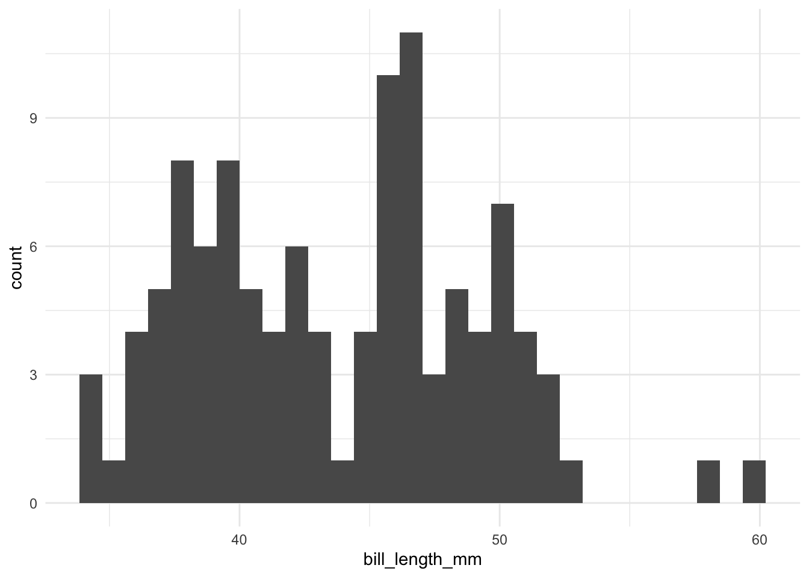

6 R Markdown Reports
You are reading the free online version of this book. If you’d like to purchase a physical or electronic copy, you can buy it from No Starch Press, Powell’s, or Amazon.
Imagine that you’ve collected surveys about customer satisfaction with your new product. Now you’re ready to analyze the data and write up your results. First, you download your data from Google Sheets and import it into a statistical analysis tool like SPSS. Next, you use SPSS to clean and analyze your data, export summaries of your data as Excel spreadsheets, and then use Excel to make some charts. Finally, you write your report in Word, pasting in your charts from Excel along the way.
Sound familiar? If so, you’re not alone. Many people use this workflow for data analysis. But what happens when, the next month, new surveys roll in, and you have to redo your report? Yup, back through steps one through five. This multi-tool process might work for a one-time project, but let’s be honest: few projects are really one-time. For example, you might catch a mistake or realize you forgot to include a couple of surveys in your original analysis.
R Markdown combines data analysis, data visualization, and other R code with narrative text to create a document that can be exported to many formats, including Word, PDF, and HTML, to share with non-R users. When you use a single tool, your workflow becomes much more efficient. If you need to re-create that January customer satisfaction report in February, you can rerun your code to produce a new document with the newest data, and to fix an error in your analysis, you can simply adjust your code.
The ability to easily update reports at any time is known as reproducibility, and it’s central to the value of R Markdown. This chapter breaks down the pieces of an R Markdown document, then describes some potential pitfalls and best practices. You’ll learn how to work with YAML metadata, R code chunks, and Markdown-formatted text; create inline R code that can change the report’s text dynamically; and run the document’s code in various ways.
Creating an R Markdown Document
To create an R Markdown document in RStudio, go to File > New File > R Markdown. Choose a title, author, and date, as well as your default output format (HTML, PDF, or Word). These values can be changed later. Click OK, and RStudio will create an R Markdown document with some placeholder content, as shown in Figure 6.1.
The Knit menu at the top of RStudio converts an R Markdown document to the format you selected when creating it. In this example, the output format is set to be Word, so RStudio will create a Word document when you knit.
Delete the document’s placeholder content. In the next section, you’ll replace it with your own.
Document Structure
To explore the structure of an R Markdown document, you’ll create a report about penguins using data from the palmerpenguins package introduced in Chapter 3. I’ve separated the data by year, and you’ll use just the 2007 data. Figure 6.2 shows the complete R Markdown document, with boxes surrounding each section.

The YAML Metadata
The YAML section is the very beginning of an R Markdown document. The name YAML comes from the recursive acronym YAML ain’t markup language, whose meaning isn’t important for our purposes. Three dashes indicate its beginning and end, and the text inside of it contains metadata about the R Markdown document:
---
title: "Penguins Report"
author: "David Keyes"
date: "2024-01-12"
output: word_document
---As you can see, the YAML provides the title, author, date, and output format. All elements of the YAML are given in key: value syntax, where each key is a label for a piece of metadata (for example, the title) followed by the value.
The R Code Chunks
R Markdown documents have a different structure from the R script files you might be familiar with (those with the .R extension). R script files treat all content as code unless you comment out a line by putting a hash mark (#) in front of it. In the following listing, the first line is a comment, and the second line is code:
```{r}
# Import our data
data <- read_csv("data.csv")
```In R Markdown, the situation is reversed. Everything after the YAML is treated as text unless you specify otherwise by creating code chunks. These start with three backticks (```), followed by the lowercase letter r surrounded by curly brackets ({}). Another three backticks indicate the end of the code chunk:
```{r}
library(tidyverse)
```If you’re working in RStudio, code chunks should have a light gray background. R Markdown treats anything in the code chunk as R code when you knit. For example, this code chunk will produce a histogram in the final Word document:
```{r}
penguins %>%
ggplot(aes(x = bill_length_mm)) +
geom_histogram() +
theme_minimal()
```Figure 6.3 shows the resulting histogram.

A code chunk at the top of each R Markdown document, known as the setup code chunk, gives instructions for what should happen when knitting a document. It contains the following options:
echoDo you want to show the code itself in the knitted document?includeDo you want to show the output of the code chunk?messageDo you want to include any messages that code might generate? For example, this message shows up when you runlibrary(tidyverse):
── Attaching core tidyverse packages ───── tidyverse 1.3.2.9000 ──
✔ dplyr 1.0.10 ✔ readr 2.1.3
✔ forcats 0.5.2 ✔ stringr 1.5.0
✔ ggplot2 3.4.0 ✔ tibble 3.1.8
✔ lubridate 1.9.0 ✔ tidyr 1.2.1
✔ purrr 1.0.1
── Conflicts───── tidyverse_conflicts() ──
✖ dplyr::filter() masks stats::filter()
✖ dplyr::lag() masks stats::lag()-
warningDo you want to include any messages that the code might generate? For example, here’s the message you get when creating a histogram usinggeom_histogram():
`stat_bin()` using `bins = 30`. Pick better value with `binwidth`.In cases where you’re using R Markdown to generate a report for a non-R user, you likely would want to hide the code, messages, and warnings but show the output (which would include any visualizations you generate). The following setup code chunk does this:
```{r setup, include = FALSE}
knitr::opts_chunk$set(
include = TRUE,
echo = FALSE,
message = FALSE,
warning = FALSE
)
```The include = FALSE option on the first line applies to the setup code chunk itself. It tells R Markdown not to include the output of the setup code chunk when knitting. The options within knitr::opts_chunk$set() apply to all future code chunks. However, you can also override these global code chunk options on individual chunks. If you wanted your Word document to show both the plot itself and the code used to make it, for example, you could set echo = TRUE for that code chunk only:
```{r echo = TRUE}
penguins %>%
ggplot(aes(x = bill_length_mm)) +
geom_histogram() +
theme_minimal()
```Because include is already set to TRUE within knitr::opts_chunk$set() in the setup code chunk, you don’t need to specify it again.
Markdown Text
Markdown is a way to style text. If you were writing directly in Word, you could just press the B button to make text bold, for example, but R doesn’t have such a button. If you want your knitted Word document to include bold text, you need to use Markdown to indicate this style in the document.
Markdown text sections (which have a white background in RStudio) will be converted into formatted text in the Word document after knitting. Figure 6.4 highlights the equivalent sections in the R Markdown and Word documents.

The text # Introduction in R Markdown gets converted to a first-level heading, while ## Bill Length becomes a second-level heading. By adding hashes, you can create up to six levels of headings. In RStudio, headings are easy to find because they show up in blue.
Text without anything before it becomes body text in Word. To create italic text, add single asterisks around it (*like this*). To make text bold, use double asterisks (**as shown here**).
You can make bulleted lists by placing a dash at the beginning of a line and adding your text after it:
- Adelie
- Gentoo
- ChinstrapTo make ordered lists, replace the dashes with numbers. You can either number each line consecutively or, as done below, repeat 1. In the knitted document, the proper numbers will automatically generate.
1. Adelie
1. Gentoo
1. ChinstrapFormatting text in Markdown might seem more complicated than doing so in Word. But if you want to switch from a multi-tool workflow to a reproducible R Markdown–based workflow, you need to remove all manual actions from the process so that you can easily repeat it in the future.
Inline R Code
R Markdown documents can also include little bits of code within Markdown text. To see how this inline code works, take a look at the following sentence in the R Markdown document:
The average bill length is `r average_bill_length` millimeters.Inline R code begins with a backtick and the lowercase letter r and ends with another backtick. In this example, the code tells R to print the value of the variable average_bill_length, which is defined as follows in the code chunk before the inline code:
```{r}
average_bill_length <- penguins %>%
summarize(avg_bill_length = mean(
bill_length_mm,
na.rm = TRUE
)) %>%
pull(avg_bill_length)
```This code calculates the average bill length and saves it as average_bill_length. Having created this variable, you can now use it in the inline code. As a result, the Word document includes the sentence “The average bill length is 43.9219298.”
One benefit of using inline R code is that you avoid having to copy and paste values, which is error-prone. Inline R code also makes it possible to automatically calculate values on the fly whenever you reknit the R Markdown document with new data. To see how this works, you’ll make a new report using data from 2008. To do this, you need to change only one line, the one that reads the data:
penguins <- read_csv("https://data.rfortherestofus.com/penguins-2008.csv")Now that you’ve switched penguins-2007.csv to penguins-2008.csv, you can reknit the report and produce a new Word document, complete with updated results. Figure 6.5 shows the new document.

The new histogram is based on the 2008 data, as is the average bill length of 43.5412281. These values update automatically because every time you press Knit, the code is rerun, regenerating plots and recalculating values. As long as the data you use has a consistent structure, updating a report requires just a click of the Knit button.
Running Code Chunks Interactively
You can run the code in an R Markdown document in two ways. The first is by knitting the entire document. The second is to run code chunks manually (also known as interactively) by pressing the green play button at the top right of a code chunk. The down arrow next to the green play button will run all code until that point. You can see these buttons in Figure 6.6.
You can also use command-enter on macOS or ctrl-enter on Windows to run sections of code, as in an R script file. Running code interactively is a good way to test that portions of it work before you knit the entire document.
The one downside to running code interactively is that you can sometimes make mistakes that cause your R Markdown document to fail to knit. That is because, in order to knit, an R Markdown document must contain all the code it uses. If you’re working interactively and, say, load data from a separate file, you won’t be able to knit your document. When working in R Markdown, always keep all your code within a single document.
The code must also appear in the right order. An R Markdown document that looks like this, for example, will give you an error if you try to knit it:
---
title: "Penguins Report"
author: "David Keyes"
date: "2024-01-12"
output: word_document
---
```{r setup, include=FALSE}
knitr::opts_chunk$set(
include = TRUE,
echo = FALSE,
message = FALSE,
warning = FALSE
)
```
```{r}
penguins <- read_csv("https://data.rfortherestofus.com/penguins-2008.csv")
```
```{r}
penguins %>%
ggplot(aes(x = bill_length_mm)) +
geom_histogram() +
theme_minimal()
```
```{r}
library(tidyverse)
```This error happens because you are attempting to use tidyverse functions like read_csv(), as well as various ggplot functions, before you load the tidyverse package.
Alison Hill, a research scientist and one of the most prolific R Markdown educators, tells her students to knit early and often. This practice makes it easier to isolate issues that make knitting fail. Hill describes her typical R Markdown workflow as spending 75 percent of her time working on a new document and 25 percent of her time knitting to check that the R Markdown document works.
Quarto
In 2022, Posit released a publishing tool similar to R Markdown. Known as Quarto, this tool takes what R Markdown has done for R and extends it to other languages, including Python, Julia, and Observable JS. As I write this book, Quarto is gaining traction. Luckily, the concepts you’ve learned in this chapter apply to Quarto as well. Quarto documents have a YAML section, code chunks, and Markdown text. You can export Quarto documents to HTML, PDF, and Word. However, R Markdown and Quarto documents have some syntactic differences, which are explored further in Chapter 10.
Summary
You started this chapter by considering the scenario of a report that needs to be regenerated monthly. You learned how you can use R Markdown to reproduce this report every month without changing your code. Even if you lost the final Word document, you could quickly re-create it.
Best of all, working with R Markdown makes it possible to do in seconds what would have previously taken hours. When making a single report requires three tools and five steps, you may not want to work on it. But, as Alison Hill has pointed out, with R Markdown you can even work on reports before you receive all of the data. You could simply write code that works with partial data and rerun it with the final data at any time.
This chapter has just scratched the surface of what R Markdown can do. The next chapter will show you how to use it to instantly generate hundreds of reports. Magic indeed!
Additional Resources
Yihui Xie, J. J. Allaire, and Garrett Grolemund, R Markdown: The Definitive Guide (Boca Raton, FL: CRC Press, 2019), https://bookdown.org/yihui/rmarkdown/.
Yihui Xie, Christophe Dervieux, and Emily Riederer, R Markdown Cookbook (Boca Raton, FL: CRC Press, 2021), https://bookdown.org/yihui/rmarkdown-cookbook/.